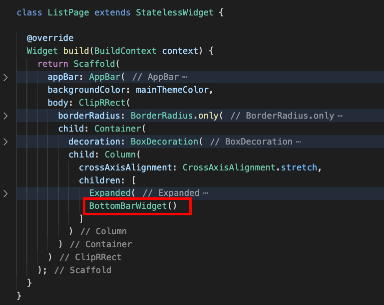
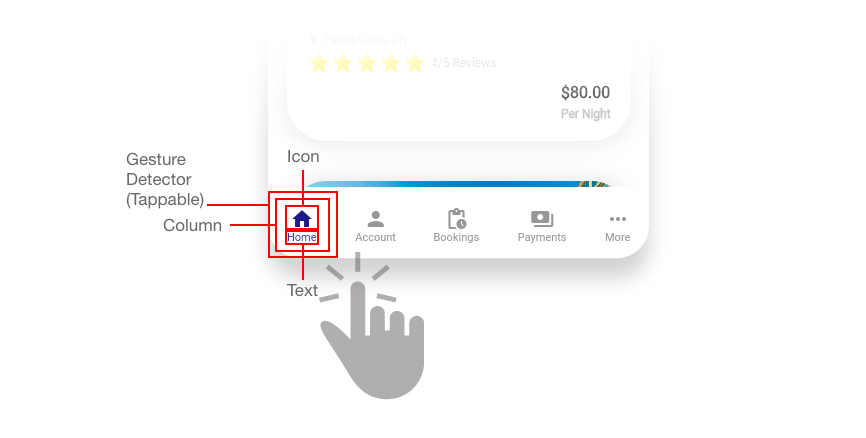

What You'll Build in this Workshop:
- Learn about StatefulWidgets in Flutter and how they maintain and encapsulate state
- Common Flutter Layout strategies using just core widgets
- Creating custom Flutter widgets (i.e. BottomBarWidget) and achieve widget composition
- Creating Dart models to mock up app data
- Import network images
- Using Material Icon fonts
- A computer with a browser
- An internet connection
We're ready to tackle the layout of the last widget of the ListPage widget, which we're calling the BottomBarWidget, which is nothing more than a custom bar that can be used as tab navigation for this page, and switch between different views based on what the user has clicked. We will only do the layout and not perform any navigation, for the sake of this tutorial that deals with layout building.
BottomBarWidget
For this widget, we'll be maintaining state within itself, hence this widget will inherit from StatefulWidget. Every time a user clicks on one of the bottom bar options, the widget's state changes - the state of which one is selected - which triggers a rebuild, and renders accordingly. That's in essence how StatefulWidgets work. More on StatefulWidgets here.
Let's show the schematic view of this widget, so we'll have a concrete idea of its composition and how we'll build it:
Creating the BottomBarWidget widget class / Adding Placeholder
As in the previous occasions, we first add a placeholder widget instance, then we create it. We'll do the same here.
Back in the ListPage widget, inside the Column widget, right underneath the Expanded widget we created earlier that holds our ListView widget, add our upcoming widget BottomBarWidget.

Let's work right under the AttractionCard widget we created earlier) or anywhere at the bottom of this file. Go ahead and create a StatefulWidget, which involves a two-step process.
A widget that maintains its state and extending StatefulWidget is composed of two classes, the widget class that extends StatefulWidget and the State class.
First step is creating a new class that extends StatefulWidget (in our case, a class called BottomBarWidget).
In this class, you will override a special method called createState, which instantiates the companion State class, which by convention, it's usually named <NAME_OF_WIDGET>State (i.e. BottomBarWidgetState - we haven't created it yet, but we will in a minute).
Second step is creating the class that will hold the state for this widget, which we'll call BottomBarWidgetState - this is the one that contains the build method, and every time the state changes, the build method gets triggered, rebuilding the widget, keeping it in sync with the data. This class extends State and must be of type of its corresponding StatefulWidget (i.e. State<BottomBarWidget>) so as to establish the relationship between the widget and its state.
As in the past, override the build method, add some dummy Container with a Text widget, just for testing. Add the text "Bottom Bar" to the Text widget.
Right off the bat, the State class looks pretty much like a StatefulWidget class, with an overridden build method - we'll see down below what makes it so special.
Your class(es) should look as follows:
If you hit the Run button on DartPad at this point in time, it should yield the following output in the preview panel on the right (see the text "Bottom Bar" at the bottom), which proves that things are hooked up and the widget is showing:
Let's dig in!
Creating a Model for the Bottom Bar Item Data
Before we proceed further, we want to create a model that holds the data corresponding to each one of the bottom bar items (i.e. we want to show an icon, a label, a flag whether it is selected or not, etc.). This model will also hold information about the state we're keeping track of - which of the selected bottom bar items is selected.
Let's create a model class called BottomBarItem, which will be just a regular class that will hold the following properties:
- icon: type IconData, represents the icon to show for each item in the bottom bar
- isSelected: type bool, holds the value of whether this is the currently selected item in the bottom bar
- label: type *String represents the label to show underneath the tab item icon.
Your BottomBarItem model class should look as follows (grab the code as well and copy / paste it):
Now that we have a way to represent each of the bottom bar items, let's create a collection of these items inside of the State so we can keep track of which one is selected.
Proceed to the BottomBarWidgetState class; inside of the class, above the build method, create a property called barItems; make it a List of BottomBarItem models, and initialize it with an empty array, as follows:
Now let's populate it with some mocked data:
// populate the list of BottomBarItem models
final List<BottomBarItem> barItemsList = [
BottomBarItem(label: 'Home', isSelected: true, icon: Icons.home),
BottomBarItem(label: 'Account', isSelected: false, icon: Icons.person),
BottomBarItem(label: 'Bookings', isSelected: false, icon: Icons.pending_actions),
BottomBarItem(label: 'Payments', isSelected: false, icon: Icons.payments),
BottomBarItem(label: 'More', isSelected: false, icon: Icons.more_horiz),
];
Notice that the top item inserted has the isSelected property as true since we want the first item to display as selected by default.
Back in the BottomBarWidgetState class, assign this hardcoded list of models (barItemsList) to the property we created locally list of bottom bar items (barItems).
Nice. Let's build up on that existing Container widget returned by the build method of the BottomBarWidgetState class.
Let's set some of its properties to the following values:
- padding: 20px top, left and right, 15px bottom
Replace the contents of the Container widget (the Text widget) by a Row widget (the items in the bottom bar will be laid out horizontally, evenly spaced out).
Add a Row widget, and set its mainAxisAlignment property to MainAxisAlignment.spaceBetween - this will make its children space themselves evenly while adding space around them.
We'll generate the children of the Row widget as a list, based on the values available in the collection called barItems created earlier. We'll loop through these items and generate a corresponding widget from each of the items available.
The factory method available in the List class called generate will simplify the looping throught the items in the barItems collection. This factory method takes two parameters: the length of the list (provided by barItems.length) and a callback, which will be executed for each of the items in the collection, and will pass an index into the callback - the index corresponding to each item in the collection. Assign this to the children property of the Row widget.

Now, for each of the items in the barItems collection, we will grab the current bar item from the iteration (using the index supplied to the callback method) and grab the corresponding item from the barItems collection using this index. We'll also create a local variable called barItem to hold the resulting widget to render based on that logic.
After pulling a model from the barItems collection and saving it into the barItem property, let's return out of this callback a small structure: a Column widget, holding two items: an Icon widget, populated by the icon property of the barItem model extracted earlier. Set its color to mainThemeColor if the isSelected property is true, otherwise, set it to grey.
Below the Icon widget, add a Text widget, and set it to be the label property of the barItem model; for its style, set the color just like the Icon widget above (set its color to mainThemeColor if the isSelected property is true, otherwise, set it to grey), and with a font size of 11.
The callback should look like this at the moment:

In order to make this tiny structure (the Column widget with the Icon and the Text widget) clickable by the user, we will wrap it inside a GestureDectector widget, and leverage its onTap event to handle the tapping, as follows:
If you preview what you've done so far by running it on DartPad, you might think you're done, but at least the structure is in plaace. If you tap on the items, nothing happens, but at least we should be all set to add the functionality that will occur upon tapping.
Let's continue!
When a user taps on one of the bar items not selected, it will change the underlying model's isSelected flag to true; this is an indication that this widget's state has changed and that we want the widget visualization to sync with the data. The GestureDetector widget's onTap event will be used to trigger the change. By performing the desired change (flipping the value from false to true in the corresponding model) will trigger a set of events:
- The value in the model changes from true to false
- The widget gets notified that its user interface is not in sync with the data via the setState method
- A widget rebuild kicks off, re-rendering the list of Column widgets, with its internal structure of an Icon and a Text widget
- The corresponding Icon and Text widget that has the associated model with the isSelected property set to true will change its color to mainThemeColor, the rest will be gray
Inside the onTap() event, call the setState() method, and inside of this method, loop through all barItems items, only marking as selected the one that matches with the barItem - the one in the current iteration:
Every time we press on one of the non-selected items, setState gets called, flag is reset for one of the items, widget rebuilds, and so on.
If you take it for a spin on DartPad and hit Run, you'll notice the full-fledged BottomBarWidget widget. Click on the items on the bar and you'll see them change state accordingly, and the state contained only within this widget in a very efficient manner:
Also notice the full-fledged ListPage page widget, with all its widgets in place.
And with that, we're done with this codelab for this workshop, where we accomplished the following:
- Created the BottomBarWidget widget / wrapped up the ListPage widget
- Created the individual widgets that make up this page widget
- Created models and mocked data that fed these widgets
- Dive into building UI layouts in Flutter using just core widgets
- Delved into StatefulWidgets and how they changed state and trigger widget rebuilds
Please don't forget to follow me on social media:
- On Twitter (@drcoderz)
- On YouTube (Roman Just Codes)
- On My Personal Portfolio
- On Medium
In case you fell behind on this codelab, below is the whole code for this codelab in a way you can copy / paste directly into DartPad:
import 'package:flutter/material.dart';
const Color mainThemeColor = Color(0xFF272D8D);
final List<Attraction> attractionsList = [
Attraction(
imgPath:
'https://cf.bstatic.com/xdata/images/hotel/max1024x768/275162028.jpg?k=38b638c8ec9ec86624f9a598482e95fa634d49aa3f99da1838cf5adde1a14521&o=&hp=1',
name: 'Grand Bavaro Princess',
desc: 'All-Inclusive Resort',
location: 'Punta Cana, DR',
rating: 3,
price: 80.0),
Attraction(
imgPath:
'https://cf.bstatic.com/xdata/images/hotel/max1024x768/232161008.jpg?k=27808fe44ab95f6468e5433639bf117032c8271cebf5988bdcaa0a202b9a6d79&o=&hp=1',
name: 'Hyatt Ziva Cap Cana',
desc: 'All-Inclusive Resort',
price: 90.0,
rating: 4,
location: 'Punta Cana, DR'),
Attraction(
imgPath:
'https://cf.bstatic.com/xdata/images/hotel/max1024x768/256931299.jpg?k=57b5fb9732cd89f308def5386e221c46e52f48579345325714a310addf819274&o=&hp=1',
name: 'Impressive Punta Cana',
desc: 'All-Inclusive Resort',
price: 100.0,
rating: 5,
location: 'Punta Cana, DR'),
Attraction(
imgPath:
'https://cf.bstatic.com/xdata/images/hotel/max1024x768/283750757.jpg?k=4f3437bf1e1b077463c9900e4dd015633db1d96da38f034f4b70a4ba3ef76d82&o=&hp=1',
name: 'Villas Mar Azul Dreams',
desc: 'All-Inclusive Resort',
price: 100.0,
rating: 4,
location: 'Tallaboa, PR'),
];
final List<BottomBarItem> barItemsList = [
BottomBarItem(label: 'Home', isSelected: true, icon: Icons.home),
BottomBarItem(label: 'Account', isSelected: false, icon: Icons.person),
BottomBarItem(label: 'Bookings', isSelected: false, icon: Icons.pending_actions),
BottomBarItem(label: 'Payments', isSelected: false, icon: Icons.payments),
BottomBarItem(label: 'More', isSelected: false, icon: Icons.more_horiz),
];
void main() {
runApp(
MaterialApp(
debugShowCheckedModeBanner: false,
home: SplashPage()
)
);
}
class SplashPage extends StatelessWidget {
@override
Widget build(BuildContext context) {
Future.delayed(const Duration(seconds: 2), () {
Navigator.of(context).push(
MaterialPageRoute(builder: (context) => ListPage())
);
});
return Stack(
children: [
Container(
color: mainThemeColor
),
Align(
alignment: Alignment.center,
child: Icon(
Icons.pool,
color: Colors.white,
size: 80
)
),
Align(
alignment: Alignment.bottomCenter,
child: LinearProgressIndicator(
valueColor: AlwaysStoppedAnimation<Color>(
Colors.white.withOpacity(0.4)
)
)
)
],
);
}
}
class ListPage extends StatelessWidget {
@override
Widget build(BuildContext context) {
return Scaffold(
appBar: AppBar(
backgroundColor: Colors.transparent,
iconTheme: IconThemeData(color: Colors.white),
elevation: 0,
title: Icon(Icons.pool, color: Colors.white),
actions: [
Container(
margin: EdgeInsets.only(right: 15),
child: Icon(
Icons.notifications,
color: Colors.white
)
)
]
),
backgroundColor: mainThemeColor,
body: ClipRRect(
borderRadius: BorderRadius.only(
topLeft: Radius.circular(50),
topRight: Radius.circular(50)
),
child: Container(
decoration: BoxDecoration(
color: Colors.white,
borderRadius: BorderRadius.only(
topLeft: Radius.circular(50),
topRight: Radius.circular(50)
)
),
child: Column(
crossAxisAlignment: CrossAxisAlignment.stretch,
children: [
Expanded(
child: ListView.builder(
itemCount: attractionsList.length,
itemBuilder: (context, index) {
Attraction attr = attractionsList[index];
return AttractionCard(attraction: attr);
})
),
BottomBarWidget()
]
)
)
)
);
}
}
class AttractionCard extends StatelessWidget {
Attraction? attraction;
AttractionCard({ this.attraction });
@override
Widget build(BuildContext context) {
return Container(
margin: EdgeInsets.all(20),
decoration: BoxDecoration(
color: Colors.white,
borderRadius: BorderRadius.circular(40),
boxShadow: [
BoxShadow(
blurRadius: 20,
offset: Offset.zero,
color: Colors.black.withOpacity(0.1)
)
]
),
child: ClipRRect(
borderRadius: BorderRadius.circular(40),
child: Container(
height: 300,
child: Stack(
children: [
Column(
children: [
Container(
height: 150,
decoration: BoxDecoration(
image: DecorationImage(
image: NetworkImage(attraction!.imgPath!),
fit: BoxFit.cover
)
)
),
Container(
height: 150,
padding: EdgeInsets.all(20),
child: Row(
mainAxisAlignment: MainAxisAlignment.spaceBetween,
children: [
Column(
crossAxisAlignment: CrossAxisAlignment.start,
children: [
Text(attraction!.name!,
style: TextStyle(
color: Colors.black,
fontSize:14,
fontWeight:FontWeight.bold
)
),
SizedBox(width: 5),
Row(
children: [
Icon(
Icons.pin_drop,
color: Colors.grey.withOpacity(0.7),
size: 12
),
SizedBox(width: 5),
Text(attraction!.location!,
style: TextStyle(
fontSize: 12,
color: Colors.grey.withOpacity(0.7),
fontWeight: FontWeight.bold
)
),
]
),
SizedBox(width: 5),
RatingWidget(rating: attraction!.rating!)
]
),
Column(
crossAxisAlignment: CrossAxisAlignment.end,
mainAxisAlignment: MainAxisAlignment.end,
children: [
Text('\$${attraction!.price!.toStringAsFixed(2)}',
style: TextStyle(
color: Colors.black,
fontSize:16,
fontWeight: FontWeight.bold
)
),
SizedBox(height: 5),
Text('Per Night',
style: TextStyle(
fontSize: 12,
color: Colors.grey.withOpacity(0.7),
fontWeight: FontWeight.bold
)
)
],
)
]
)
)
],
),
Align(
alignment: Alignment.centerRight,
child: Container(
child: Icon(
Icons.favorite,
color: Colors.white,
size: 15
),
margin: EdgeInsets.only(right: 10),
width: 40,
height: 40,
decoration: BoxDecoration(
color: mainThemeColor,
borderRadius: BorderRadius.circular(40),
boxShadow: [
BoxShadow(
blurRadius: 10,
color: mainThemeColor.withOpacity(0.5),
offset:Offset.zero
)
]
)
)
)
],
)
)
)
);
}
}
class BottomBarWidget extends StatefulWidget {
@override
BottomBarWidgetState createState() => BottomBarWidgetState();
}
class BottomBarWidgetState extends State<BottomBarWidget> {
List<BottomBarItem> barItems = barItemsList;
@override
Widget build(BuildContext context) {
return Container(
padding: EdgeInsets.only(top: 20, left: 20, right: 20, bottom: 15),
child: Row(
mainAxisAlignment: MainAxisAlignment.spaceBetween,
//... rest of the code omitted for brevity ...
children: List.generate(
barItems.length,
(index) {
var barItem = barItems[index];
return GestureDetector(
onTap: () {
setState(() {
barItems.forEach((element) {
element.isSelected = barItem == element;
});
});
},
child: Column(
children: [
Icon(barItem.icon, color: barItem.isSelected!
? mainThemeColor : Colors.grey),
Text(barItem.label!, style: TextStyle(
color: (barItem.isSelected! ? mainThemeColor : Colors.grey),
fontSize: 11
))
]
)
);
})
)
);
}
}
class RatingWidget extends StatelessWidget {
int? rating;
RatingWidget({ this.rating });
@override
Widget build(BuildContext context) {
return Row(
children: [
Row(
children: List.generate(5, (index) {
return Icon(
index < this.rating! ? Icons.star : Icons.star_border,
color: Colors.yellow
);
})
),
SizedBox(width: 5),
Text('${this.rating!}/5 Reviews',
style: TextStyle(
fontSize: 12,
color: Colors.grey.withOpacity(0.7)
)
)
],
);
}
}
class Attraction {
String? imgPath;
String? name;
String? desc;
double? price;
String? location;
int? rating;
Attraction({this.imgPath, this.name, this.desc, this.price, this.location, this.rating });
}
class BottomBarItem {
String? label;
bool? isSelected;
IconData? icon;
BottomBarItem({ this.label, this.isSelected, this.icon });
}